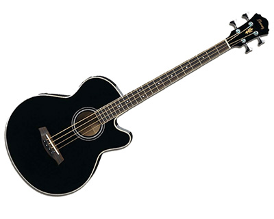

We carry both four and five string basses, electric and acoustic basses.
Pictured: Dean's Zone 4-string bass.

Acoustic bass guitars remove the need for an amplifier and allow you to play your bass anywhere and anytime. We also carry a wide selection of acoustic-electric bass guitars.
Pictured: a beautiful black finish acoustic guitar from Ibanez.